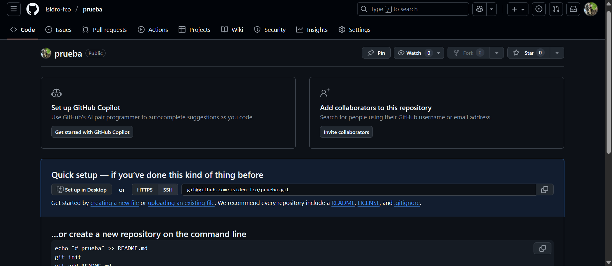

Practica0
Práctica 0: Uso de repositorios
Isidro Francisco Perez Paz - 377806
MARKDOWN
Markdown es un lenguaje de marcado que facilita la aplicación de formato a un texto empleando una serie de caracteres de una forma especial. En principio, fue pensado para elaborar textos cuyo destino iba a ser la web con más rapidez y sencillez que si estuviésemos empleando directamente HTML.
Sintaxis
Comentarios
<!-- Este es un comentario -->
Encabezados
# Encabezado 1
## Encabezado 2
### Encabezado 3
#### Encabezado 4
##### Encabezado 5
Formato de fuentes
<!-- Italicas -->
Este es un texto en *italica*
<!-- Negritas -->
Este es un texto en **negritas**
<!-- Tachado -->
Este es `un texto` ~~tachado~~
Elementos
* Elemnto 1
* Elemnto 2
* Elemento 3
* Elemento 3.1
* Elemnto 3.2
* Elemento 3.2.1
* Elemnto 4
<!-- OL -->
1. Elemnto 1
1. Elemnto 2
1. Elemento 3
1. Elemento 3.1
1. Elemnto 3.2
1. Elemnto 4
Enlaces
[Texto de enlace](https://www.google.com "Texto del tooltip")
[UABC](http://www.uabc.mx)
[UABC](http://www.uabc.mx "Sitio Univesitario")
Imagenes


[](http://www.uabc.mx "Sitio Universitario")
<img src="./GitHub.webp" alt="GitHub image" width="150" height="auto">
[<img src="./vscode.webp" alt="vscode image" width="150" height="auto">](http://www.vscode.com)
Bloques de codigo
```Python
print("Hola Mundo!")
```
```javascript
console.log("Hola Mundo!")
const test = ()
```
```html
<h1>Hola Mundo</h1>
```
Tablas
|Producto|Precio|Cantidad|
|-|-|-|
|Laptop|3.3|2|
|Mouse|13.3|1|
| Producto | Precio | Cantidad |
|----------|--------|----------|
| Laptop | 3.3 | 2 |
| Mouse | 13.3 | 1 |
Notas
> Esto es una nota.
Tareas
* [x]Primera tarea
* [ ]Segunda tarea
* [x]Tercera tarea
* [ ]Cuarta tarea
Separadores horizontales
---
***
___
Git y GitHub
Git: es un software de código abierto que se ejecuta en tu computadora. Su propósito principal es rastrear los cambios en los archivos de un proyecto a lo largo del tiempo. Es lo que se conoce como un Sistema de Control de Versiones Distribuido (DVCS).
GitHub: es una plataforma web que usa la tecnología de Git. Es un servicio de alojamiento de repositorios remotos. No es Git en sí mismo, sino un lugar para subir los repositorios de Git y colaborar con otros.
Como crear tu repositorio y subir tus archivos
Inicia sesion o crea una cuenta en GitHub. Ya creado tu perfil, vas buscar un boton verde que dice new.

Ya dentro introduces el nombre que le quieres poner a tu repositorio. Al igual que una descripcion (opcional). Ya que tengas lo anterior vas a pulsar el boton verde que dice Create repository.

Te saldra una pagina asi, como la siguente imagen.

Ahora es turno de usar Git, descarga Git y instalalo. Ya instalado entra a tu carpeta del proyecto con vscode y en la terminal cambia la Power Shell a Git Bash.

Inicializa un repositorio Git en esa carpeta.
git init
Agrega todos tus archivos al área de preparación.
git add .
Crea el
commitpara guardar los cambios.
git commit -m "commit version_final3"
Conecta tu repositorio local con el remoto usando la URL de SSH.
git remote add origin git@github.com:isidro-fco/prueba.git
Sube tus archivos a GitHub. Git usará tu clave SSH para autenticarse automáticamente.
git push -u origin master
Para ver el informe de estado de tus archivos.
git status
Hugo y GitHub Actions
Hugo: es un generador de sitios estáticos escrito en el lenguaje de programación Go. Se ha vuelto muy popular debido a su alta velocidad y flexibilidad. Hugo convierte archivos de contenido (generalmente escritos en Markdown) y plantillas en un sitio web completamente estático.
GitHub Actions: es una plataforma de integración y entrega continua (CI/CD) directamente integrada en GitHub. Permite automatizar flujos de trabajo en el ciclo de vida del desarrollo de software, como la construcción, prueba y despliegue de aplicaciones.
https://github.com/isidro-fco/Paradigmas_Prog